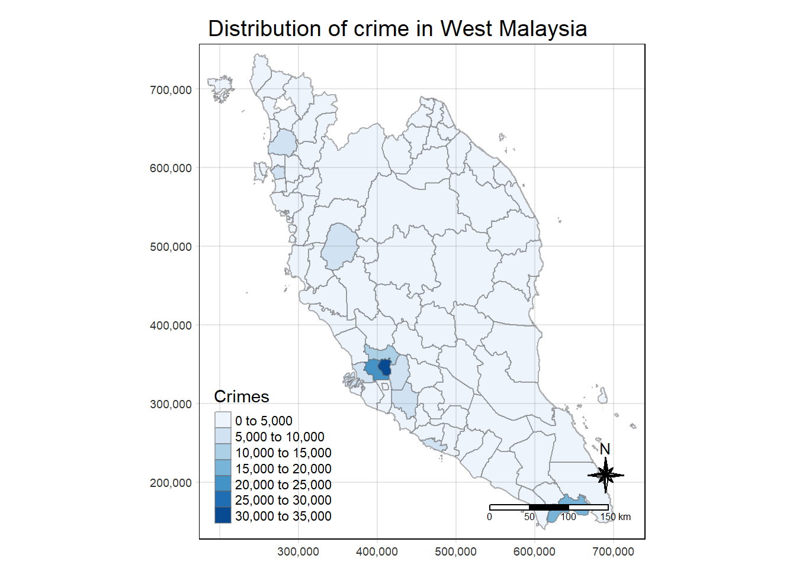
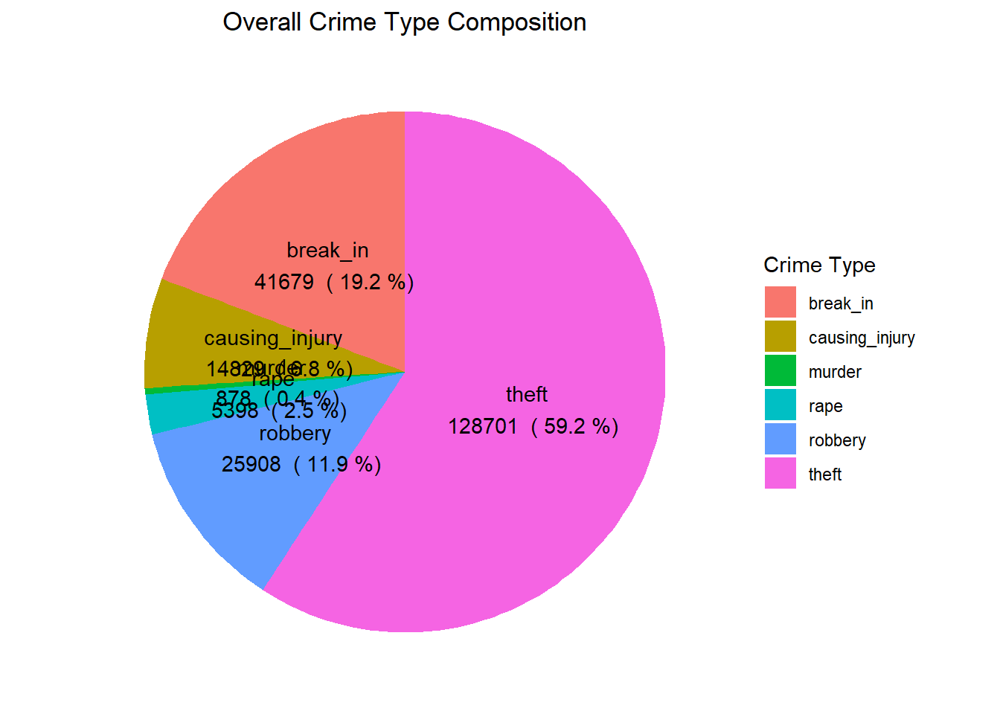
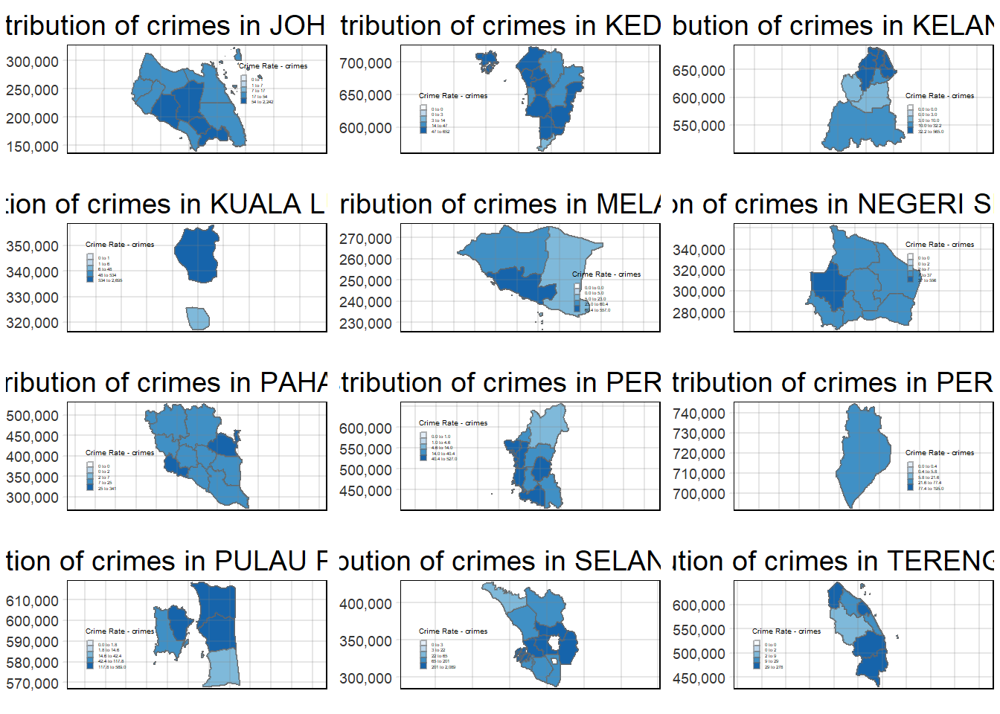
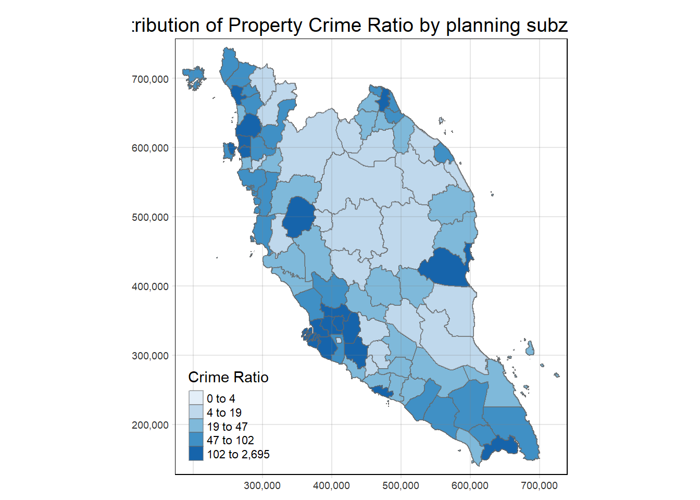
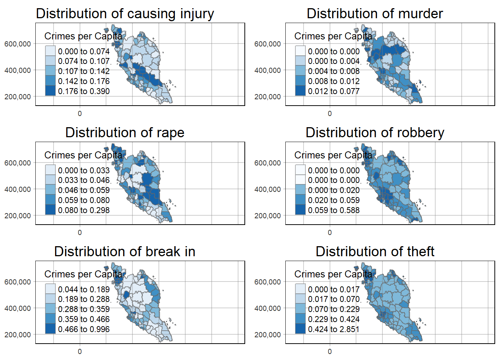
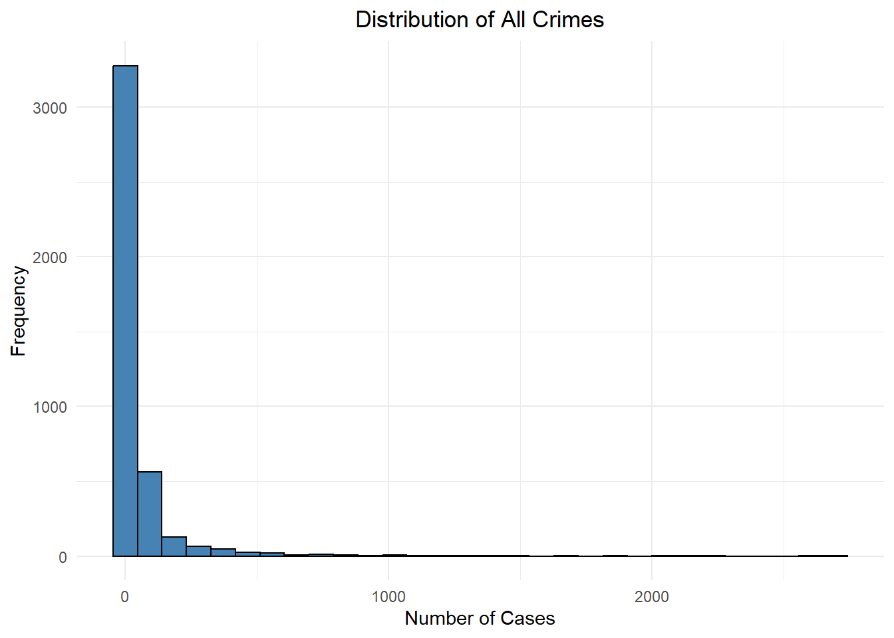
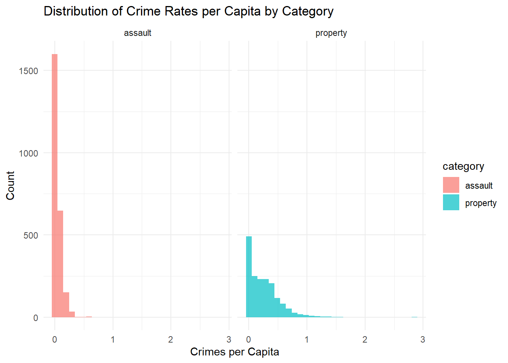
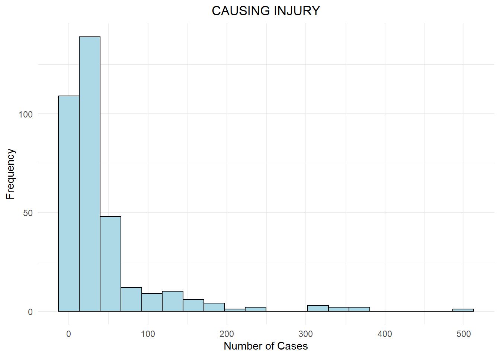

pacman::p_load(sf, st, tidyverse, raster, tmap, tmaptools, ggplot2,
spatstat, sfdep, ClustGeo, ggpubr, cluster, factoextra,
NbClust, heatmaply, corrplot, psych, tidyverse, GGally)Take-Home_Ex03
1. Introduction
1.1 Responsibility
1.2 Motivation
1.3 Objectives
2. Packages and Data
2.1 Packages Required
2.2 Data Required
There are two datasets being used in this exercise.
Malaysia – Crime by District and Crime Type from data.gov.my in csv format.
Malaysia - Subnational Administrative Boundaries with included administrative regions in shapefile format.
Malaysia – Annual Principal Labour Force Statistics by District from data.gov.my in csv format.
Malaysia – Household Income and Expenditure: Administrative Districts from data.gov.my in csv format.
Malaysia – Enrolment in Government Schools by District from data.gov.my in csv format.
Malaysia – Enrolment in Government Schools by District from data.gov.my in csv format.
We first import the crime rate csv file into R.
crime_df <- read_csv("data/crime_district.csv")Rows: 19152 Columns: 6
── Column specification ────────────────────────────────────────────────────────
Delimiter: ","
chr (4): state, district, category, type
dbl (1): crimes
date (1): date
ℹ Use `spec()` to retrieve the full column specification for this data.
ℹ Specify the column types or set `show_col_types = FALSE` to quiet this message.population_df <- read_csv("data/population_district.csv")Rows: 319200 Columns: 7
── Column specification ────────────────────────────────────────────────────────
Delimiter: ","
chr (5): state, district, sex, age, ethnicity
dbl (1): population
date (1): date
ℹ Use `spec()` to retrieve the full column specification for this data.
ℹ Specify the column types or set `show_col_types = FALSE` to quiet this message.Next, we import the administrative regions of Malaysia.
mys_sf <- read_sf(dsn = "data/my_shp",
layer = "mys_admbnda_adm2_unhcr_20210211") %>%
st_transform(crs = 3168)2.3 Wrangling
2.3.1 Data Preparation
print("Unique states in crime_df:")[1] "Unique states in crime_df:"unique(crime_df$state) [1] "Malaysia" "Johor" "Kedah"
[4] "Kelantan" "Melaka" "Negeri Sembilan"
[7] "Pahang" "Perak" "Perlis"
[10] "Pulau Pinang" "Sabah" "Sarawak"
[13] "Selangor" "Terengganu" "W.P. Kuala Lumpur"print("Unique states in population_df:")[1] "Unique states in population_df:"unique(crime_df$state) [1] "Malaysia" "Johor" "Kedah"
[4] "Kelantan" "Melaka" "Negeri Sembilan"
[7] "Pahang" "Perak" "Perlis"
[10] "Pulau Pinang" "Sabah" "Sarawak"
[13] "Selangor" "Terengganu" "W.P. Kuala Lumpur"print("Unique states in mys_sf:")[1] "Unique states in mys_sf:"unique(mys_sf$ADM1_EN) [1] "Johor" "Kedah" "Kelantan"
[4] "W.P. Kuala Lumpur" "W.P. Labuan" "Melaka"
[7] "Negeri Sembilan" "Pahang" "Perak"
[10] "Perlis" "Pulau Pinang" "Sabah"
[13] "Sarawak" "Terengganu" "W.P. Putrajaya"
[16] "Selangor" Convert state and district to upper for matching
crime_df <- crime_df %>%
mutate(year = year(date),
state = toupper(state),
district = toupper(district))
crime_df# A tibble: 19,152 × 7
state district category type date crimes year
<chr> <chr> <chr> <chr> <date> <dbl> <dbl>
1 MALAYSIA ALL assault all 2016-01-01 22327 2016
2 MALAYSIA ALL assault all 2017-01-01 21366 2017
3 MALAYSIA ALL assault all 2018-01-01 16902 2018
4 MALAYSIA ALL assault all 2019-01-01 16489 2019
5 MALAYSIA ALL assault all 2020-01-01 13279 2020
6 MALAYSIA ALL assault all 2021-01-01 11495 2021
7 MALAYSIA ALL assault all 2022-01-01 10348 2022
8 MALAYSIA ALL assault all 2023-01-01 10453 2023
9 MALAYSIA ALL assault causing_injury 2016-01-01 5531 2016
10 MALAYSIA ALL assault causing_injury 2017-01-01 5024 2017
# ℹ 19,142 more rowspopulation_df <- population_df %>%
mutate(year = year(date),
state = toupper(state),
district = toupper(district))
population_df# A tibble: 319,200 × 8
state district date sex age ethnicity population year
<chr> <chr> <date> <chr> <chr> <chr> <dbl> <dbl>
1 JOHOR BATU PAHAT 2020-01-01 both overall overall 495. 2020
2 JOHOR BATU PAHAT 2020-01-01 both overall bumi_malay 311. 2020
3 JOHOR BATU PAHAT 2020-01-01 both overall bumi_other 5.1 2020
4 JOHOR BATU PAHAT 2020-01-01 both overall chinese 140. 2020
5 JOHOR BATU PAHAT 2020-01-01 both overall indian 6.9 2020
6 JOHOR BATU PAHAT 2020-01-01 both overall other_citizen 1.8 2020
7 JOHOR BATU PAHAT 2020-01-01 both overall other_noncitizen 30.2 2020
8 JOHOR BATU PAHAT 2020-01-01 both 0-4 overall 30.3 2020
9 JOHOR BATU PAHAT 2020-01-01 both 0-4 bumi_malay 21.3 2020
10 JOHOR BATU PAHAT 2020-01-01 both 0-4 bumi_other 0.5 2020
# ℹ 319,190 more rowsmys_sf <- mys_sf %>%
mutate(ADM1_EN = toupper(ADM1_EN),
ADM2_EN = toupper(ADM2_EN))
mys_sfSimple feature collection with 144 features and 14 fields
Geometry type: MULTIPOLYGON
Dimension: XY
Bounding box: xmin: 184853.1 ymin: 94420.8 xmax: 2380932 ymax: 829136
Projected CRS: Kertau (RSO) / RSO Malaya (m)
# A tibble: 144 × 15
ADM2_EN ADM2_PCODE ADM2_REF ADM2ALT1EN ADM2ALT2EN ADM1_EN ADM1_PCODE ADM0_EN
* <chr> <chr> <chr> <chr> <chr> <chr> <chr> <chr>
1 BATU PA… MY0101 <NA> <NA> <NA> JOHOR MY01 Malays…
2 JOHOR B… MY0102 <NA> <NA> <NA> JOHOR MY01 Malays…
3 KLUANG MY0103 <NA> <NA> <NA> JOHOR MY01 Malays…
4 KOTA TI… MY0104 <NA> <NA> <NA> JOHOR MY01 Malays…
5 KULAIJA… MY0105 <NA> <NA> <NA> JOHOR MY01 Malays…
6 LEDANG MY0106 <NA> <NA> <NA> JOHOR MY01 Malays…
7 MERSING MY0107 <NA> <NA> <NA> JOHOR MY01 Malays…
8 MUAR MY0108 <NA> <NA> <NA> JOHOR MY01 Malays…
9 PONTIAN MY0109 <NA> <NA> <NA> JOHOR MY01 Malays…
10 SEGAMAT MY0110 <NA> <NA> <NA> JOHOR MY01 Malays…
# ℹ 134 more rows
# ℹ 7 more variables: ADM0_PCODE <chr>, date <date>, validOn <date>,
# validTo <date>, Shape_Leng <dbl>, Shape_Area <dbl>,
# geometry <MULTIPOLYGON [m]>2.3.2 Checking for Mismatch (State)
# Assuming you have two character vectors:
state_crime <- unique(crime_df$state)
state_sf <- unique(mys_sf$ADM1_EN)
# Find states in crime_df that are not in mys_sf
missing_in_sf <- setdiff(state_crime, state_sf)
# Find states in mys_sf that are not in crime_df
missing_in_crime <- setdiff(state_sf, state_crime)
# Print the mismatches
print("States in crime_df not found in mys_sf:")[1] "States in crime_df not found in mys_sf:"print(missing_in_sf)[1] "MALAYSIA"print("States in mys_sf not found in crime_df:")[1] "States in mys_sf not found in crime_df:"print(missing_in_crime)[1] "W.P. LABUAN" "W.P. PUTRAJAYA"2.3.3 Cleaning (State)
However in this case study, for ease of analysis, we choose to focus on West Malaysia, and thus will be filtering out Sarawak, Sabah and Labuan.
mys_sf <- mys_sf %>%
filter(ADM1_EN != 'W.P. LABUAN' & ADM1_EN != 'SABAH' & ADM1_EN != 'SARAWAK') %>%
mutate(ADM1_EN = replace(ADM1_EN, ADM1_EN == 'W.P. KUALA LUMPUR', 'KUALA LUMPUR'),
ADM1_EN = replace(ADM1_EN, ADM1_EN == 'W.P. PUTRAJAYA', 'KUALA LUMPUR'))
mys_sfSimple feature collection with 87 features and 14 fields
Geometry type: MULTIPOLYGON
Dimension: XY
Bounding box: xmin: 184853.1 ymin: 139843.3 xmax: 728635.8 ymax: 744607.2
Projected CRS: Kertau (RSO) / RSO Malaya (m)
# A tibble: 87 × 15
ADM2_EN ADM2_PCODE ADM2_REF ADM2ALT1EN ADM2ALT2EN ADM1_EN ADM1_PCODE ADM0_EN
* <chr> <chr> <chr> <chr> <chr> <chr> <chr> <chr>
1 BATU PA… MY0101 <NA> <NA> <NA> JOHOR MY01 Malays…
2 JOHOR B… MY0102 <NA> <NA> <NA> JOHOR MY01 Malays…
3 KLUANG MY0103 <NA> <NA> <NA> JOHOR MY01 Malays…
4 KOTA TI… MY0104 <NA> <NA> <NA> JOHOR MY01 Malays…
5 KULAIJA… MY0105 <NA> <NA> <NA> JOHOR MY01 Malays…
6 LEDANG MY0106 <NA> <NA> <NA> JOHOR MY01 Malays…
7 MERSING MY0107 <NA> <NA> <NA> JOHOR MY01 Malays…
8 MUAR MY0108 <NA> <NA> <NA> JOHOR MY01 Malays…
9 PONTIAN MY0109 <NA> <NA> <NA> JOHOR MY01 Malays…
10 SEGAMAT MY0110 <NA> <NA> <NA> JOHOR MY01 Malays…
# ℹ 77 more rows
# ℹ 7 more variables: ADM0_PCODE <chr>, date <date>, validOn <date>,
# validTo <date>, Shape_Leng <dbl>, Shape_Area <dbl>,
# geometry <MULTIPOLYGON [m]>crime_df <- crime_df %>%
filter(state != 'MALAYSIA' & state != 'SABAH' & state != 'SARAWAK' &
district != 'ALL' & type != 'all') %>%
mutate(state = replace(state, state == 'W.P. KUALA LUMPUR', 'KUALA LUMPUR'))
crime_df# A tibble: 10,368 × 7
state district category type date crimes year
<chr> <chr> <chr> <chr> <date> <dbl> <dbl>
1 JOHOR BATU PAHAT assault causing_injury 2016-01-01 39 2016
2 JOHOR BATU PAHAT assault causing_injury 2017-01-01 41 2017
3 JOHOR BATU PAHAT assault causing_injury 2018-01-01 28 2018
4 JOHOR BATU PAHAT assault causing_injury 2019-01-01 41 2019
5 JOHOR BATU PAHAT assault causing_injury 2020-01-01 43 2020
6 JOHOR BATU PAHAT assault causing_injury 2021-01-01 22 2021
7 JOHOR BATU PAHAT assault causing_injury 2022-01-01 19 2022
8 JOHOR BATU PAHAT assault causing_injury 2023-01-01 22 2023
9 JOHOR BATU PAHAT assault murder 2016-01-01 6 2016
10 JOHOR BATU PAHAT assault murder 2017-01-01 0 2017
# ℹ 10,358 more rowspopulation_df <- population_df %>%
filter(state != 'SABAH' & state != 'SARAWAK' & state != 'W.P. LABUAN' &
sex == "both" & age == "overall" & ethnicity == "overall" ) %>%
mutate(state = replace(state, state == 'W.P. KUALA LUMPUR', 'KUALA LUMPUR'),
state = replace(state, state == 'W.P. PUTRAJAYA', 'KUALA LUMPUR')) %>%
dplyr::select(state, district, year, population)
population_df# A tibble: 276 × 4
state district year population
<chr> <chr> <dbl> <dbl>
1 JOHOR BATU PAHAT 2020 495.
2 JOHOR JOHOR BAHRU 2020 1711.
3 JOHOR KLUANG 2020 324.
4 JOHOR KOTA TINGGI 2020 222.
5 JOHOR KULAI 2020 330.
6 JOHOR MERSING 2020 78.2
7 JOHOR MUAR 2020 315.
8 JOHOR PONTIAN 2020 173.
9 JOHOR SEGAMAT 2020 198.
10 JOHOR TANGKAK 2020 163.
# ℹ 266 more rows2.3.4 Crime (State-District)
2.3.4.1 Check for Mismatch
crime_df <- crime_df %>% mutate(state_district = paste(state, district, sep = "-"))
mys_sf <- mys_sf %>% mutate(state_district = paste(ADM1_EN, ADM2_EN, sep = "-"))# Assuming you have two character vectors:
state_district_crime <- unique(crime_df$state_district)
state_district_sf <- unique(mys_sf$state_district)
# Find mismatches
missing_in_sf <- setdiff(state_district_crime, state_district_sf)
missing_in_crime <- setdiff(state_district_sf, state_district_crime)
# Print the mismatches
print("State-District combinations in crime_df not found in mys_sf:")[1] "State-District combinations in crime_df not found in mys_sf:"print(missing_in_sf) [1] "JOHOR-ISKANDAR PUTERI" "JOHOR-JOHOR BAHRU SELATAN"
[3] "JOHOR-JOHOR BAHRU UTARA" "JOHOR-NUSAJAYA"
[5] "JOHOR-SERI ALAM" "KEDAH-BANDAR BHARU"
[7] "NEGERI SEMBILAN-NILAI" "PAHANG-CAMERON HIGHLAND"
[9] "PAHANG-KUALA LIPIS" "PERAK-BATU GAJAH"
[11] "PERAK-GERIK" "PERAK-IPOH"
[13] "PERAK-MANJUNG" "PERAK-PENGKALAN HULU"
[15] "PERAK-SELAMA" "PERAK-SUNGAI SIPUT"
[17] "PERAK-TAIPING" "PERAK-TANJONG MALIM"
[19] "PERAK-TAPAH" "PERLIS-ARAU"
[21] "PERLIS-KANGAR" "PERLIS-PADANG BESAR"
[23] "PULAU PINANG-SEBERANG PERAI SELATAN" "PULAU PINANG-SEBERANG PERAI TENGAH"
[25] "PULAU PINANG-SEBERANG PERAI UTARA" "SELANGOR-AMPANG JAYA"
[27] "SELANGOR-HULU SELANGOR" "SELANGOR-KAJANG"
[29] "SELANGOR-KLANG SELATAN" "SELANGOR-KLANG UTARA"
[31] "SELANGOR-PETALING JAYA" "SELANGOR-SERDANG"
[33] "SELANGOR-SG. BULOH" "SELANGOR-SHAH ALAM"
[35] "SELANGOR-SUBANG JAYA" "SELANGOR-SUNGAI BULOH"
[37] "KUALA LUMPUR-BRICKFIELDS" "KUALA LUMPUR-CHERAS"
[39] "KUALA LUMPUR-DANG WANGI" "KUALA LUMPUR-SENTUL"
[41] "KUALA LUMPUR-WANGSA MAJU" print("State-District combinations in mys_sf not found in crime_df:")[1] "State-District combinations in mys_sf not found in crime_df:"print(missing_in_crime) [1] "JOHOR-JOHOR BAHRU" "KEDAH-POKOK SENA"
[3] "KUALA LUMPUR-WP. KUALA LUMPUR" "PAHANG-LIPIS"
[5] "PERAK-BATANG PADANG" "PERAK-ULU PERAK"
[7] "PERAK-KINTA" "PERAK-LARUT DAN MATANG"
[9] "PERAK-MANJUNG (DINDING)" "PERLIS-PERLIS"
[11] "PULAU PINANG-S.P.SELATAN" "PULAU PINANG-S.P. TENGAH"
[13] "PULAU PINANG-S.P. UTARA" "SELANGOR-ULU LANGAT"
[15] "SELANGOR-ULU SELANGOR" "SELANGOR-KLANG"
[17] "SELANGOR-PETALING" 2.3.4.2 Cleaning
crime_df <- crime_df %>%
mutate(district = case_when(
state == "JOHOR" & district %in% c("ISKANDAR PUTERI", "NUSAJAYA", "JOHOR BAHRU SELATAN", "JOHOR BAHRU UTARA", "SERI ALAM") ~ "JOHOR BAHRU",
state == "NEGERI SEMBILAN" & district == "NILAI" ~ "SEREMBAN",
state == "KEDAH" & district == "BANDAR BHARU" ~ "BANDAR BAHARU",
state == "PAHANG" & district == "CAMERON HIGHLAND" ~ "CAMERON HIGHLANDS",
state == "PAHANG" & district == "KUALA LIPIS" ~ "LIPIS",
state == "PERAK" & district %in% c("BATU GAJAH", "IPOH") ~ "KINTA",
state == "PERAK" & district == "GERIK" ~ "ULU PERAK",
state == "PERAK" & district == "MANJUNG" ~ "MANJUNG (DINDING)",
state == "PERAK" & district == "PENGKALAN HULU" ~ "ULU PERAK",
state == "PERAK" & district %in% c("SELAMA", "TAIPING") ~ "LARUT DAN MATANG",
state == "PERAK" & district == "SUNGAI SIPUT" ~ "KUALA KANGSAR",
state == "PERAK" & district %in% c("TANJONG MALIM", "TAPAH") ~ "BATANG PADANG",
state == "PERLIS" & district %in% c("ARAU", "KANGAR", "PADANG BESAR") ~ "PERLIS",
state == "PULAU PINANG" & district == "SEBERANG PERAI SELATAN" ~ "S.P.SELATAN",
state == "PULAU PINANG" & district == "SEBERANG PERAI TENGAH" ~ "S.P. TENGAH",
state == "PULAU PINANG" & district == "SEBERANG PERAI UTARA" ~ "S.P. UTARA",
state == "SELANGOR" & district == "AMPANG JAYA" ~ "GOMBAK",
state == "SELANGOR" & district == "HULU SELANGOR" ~ "ULU SELANGOR",
state == "SELANGOR" & district == "KAJANG" ~ "ULU LANGAT",
state == "SELANGOR" & district %in% c("KLANG SELATAN", "KLANG UTARA") ~ "KLANG",
state == "SELANGOR" & district %in% c("PETALING JAYA", "SERDANG", "SG. BULOH", "SHAH ALAM", "SUBANG JAYA", "SUNGAI BULOH") ~ "PETALING",
state == "KUALA LUMPUR" & district %in% c("BRICKFIELDS", "CHERAS", "DANG WANGI", "SENTUL", "WANGSA MAJU") ~ "WP. KUALA LUMPUR",
TRUE ~ district
)) %>%
group_by(state, district, year, category, type) %>%
summarise(crimes = sum(crimes))`summarise()` has grouped output by 'state', 'district', 'year', 'category'.
You can override using the `.groups` argument.tm_shape(mys_sf) +
tm_polygons() +
tm_text("ADM2_EN", size = 0.3)2.3.4.3 Visualizing Crime Distribution
crime_df_mys <- crime_df %>%
filter(year >= 2019 & year <= 2022) %>%
left_join(mys_sf, by = c("state" = "ADM1_EN", "district" = "ADM2_EN")) %>%
dplyr::select(state, district, year, category, type, crimes, geometry)
crime_df_mys <- st_as_sf(crime_df_mys)
crime_df_mysSimple feature collection with 4128 features and 6 fields
Geometry type: MULTIPOLYGON
Dimension: XY
Bounding box: xmin: 184853.1 ymin: 139843.3 xmax: 728635.8 ymax: 744607.2
Projected CRS: Kertau (RSO) / RSO Malaya (m)
# A tibble: 4,128 × 7
# Groups: state, district, year, category [688]
state district year category type crimes geometry
<chr> <chr> <dbl> <chr> <chr> <dbl> <MULTIPOLYGON [m]>
1 JOHOR BATU PAHAT 2019 assault causing_inj… 41 (((556714.6 192051.6, 55…
2 JOHOR BATU PAHAT 2019 assault murder 3 (((556714.6 192051.6, 55…
3 JOHOR BATU PAHAT 2019 assault rape 29 (((556714.6 192051.6, 55…
4 JOHOR BATU PAHAT 2019 assault robbery_gan… 0 (((556714.6 192051.6, 55…
5 JOHOR BATU PAHAT 2019 assault robbery_gan… 37 (((556714.6 192051.6, 55…
6 JOHOR BATU PAHAT 2019 assault robbery_sol… 0 (((556714.6 192051.6, 55…
7 JOHOR BATU PAHAT 2019 assault robbery_sol… 29 (((556714.6 192051.6, 55…
8 JOHOR BATU PAHAT 2019 property break_in 157 (((556714.6 192051.6, 55…
9 JOHOR BATU PAHAT 2019 property theft_other 127 (((556714.6 192051.6, 55…
10 JOHOR BATU PAHAT 2019 property theft_vehic… 4 (((556714.6 192051.6, 55…
# ℹ 4,118 more rowstmap_mode("plot")tmap mode set to plottingcrime_df_mys_grp <- crime_df_mys %>%
group_by(state, district) %>%
summarize(total_crimes = sum(crimes))`summarise()` has grouped output by 'state'. You can override using the
`.groups` argument.choro <- tm_shape(crime_df_mys_grp) +
tm_fill("total_crimes",
style = "pretty",
palette = "Blues",
title = "Crimes") +
tm_layout(main.title = "Distribution of crime in West Malaysia",
main.title.position = "center",
main.title.size = 1.2,
legend.height = 0.45,
legend.width = 0.35,
frame = TRUE) +
tm_borders(alpha = 0.5) +
tm_compass(type="8star", size = 2) +
tm_scale_bar() +
tm_grid(alpha =0.2)
choro
2.3.5 Population (State-District)
2.3.5.1 Check for Mismatch
The year 2019 is missing from data set, hence we will map year 2020 -> 2019.
population_row <- population_df %>%
filter(year == 2020) %>%
mutate(year = 2019)
population_df <- bind_rows(population_df, population_row)
unique(population_df$year)[1] 2020 2021 2022 2019population_df <- population_df %>% mutate(state_district = paste(state, district, sep = "-"))# Assuming you have two character vectors:
state_district_population <- unique(population_df$state_district)
# Find mismatches
missing_in_sf <- setdiff(state_district_population, state_district_sf)
missing_in_population <- setdiff(state_district_sf, state_district_population)
# Print the mismatches
print("State-District combinations in population_df not found in mys_sf:")[1] "State-District combinations in population_df not found in mys_sf:"print(missing_in_sf) [1] "JOHOR-KULAI" "JOHOR-TANGKAK"
[3] "KELANTAN-KECIL LOJING" "PERAK-BAGAN DATUK"
[5] "PERAK-HULU PERAK" "PERAK-MANJUNG"
[7] "PERAK-MUALLIM" "PERAK-SELAMA"
[9] "PULAU PINANG-SEBERANG PERAI SELATAN" "PULAU PINANG-SEBERANG PERAI TENGAH"
[11] "PULAU PINANG-SEBERANG PERAI UTARA" "TERENGGANU-KUALA NERUS"
[13] "KUALA LUMPUR-W.P. KUALA LUMPUR" "PAHANG-CAMERON HIGHLAND"
[15] "PULAU PINANG-SP SELATAN" "PULAU PINANG-SP TENGAH"
[17] "PULAU PINANG-SP UTARA" print("State-District combinations in mys_sf not found in population_df:")[1] "State-District combinations in mys_sf not found in population_df:"print(missing_in_population)[1] "JOHOR-KULAIJAYA" "JOHOR-LEDANG"
[3] "KUALA LUMPUR-WP. KUALA LUMPUR" "PERAK-ULU PERAK"
[5] "PERAK-MANJUNG (DINDING)" "PULAU PINANG-S.P.SELATAN"
[7] "PULAU PINANG-S.P. TENGAH" "PULAU PINANG-S.P. UTARA" 2.3.5.2 Cleaning
population_df <- population_df %>%
mutate(district = case_when(
state == "JOHOR" & district == "KULAI" ~ "KULAIJAYA",
state == "JOHOR" & district == "TANGKAK" ~ "LEDANG",
state == "KELANTAN" & district == "KECIL LOJING" ~ "GUA MUSANG",
state == "PAHANG" & district == "CAMERON HIGHLAND" ~ "CAMERON HIGHLANDS",
state == "PERAK" & district == "HULU PERAK" ~ "ULU PERAK",
state == "PERAK" & district == "BAGAN DATUK" ~ "HILIR PERAK",
state == "PERAK" & district == "MANJUNG" ~ "MANJUNG (DINDING)",
state == "PERAK" & district == "MUALLIM" ~ "BATANG PADANG",
state == "PERAK" & district == "SELAMA" ~ "LARUT DAN MATANG",
state == "PULAU PINANG" & district == "SEBERANG PERAI SELATAN" ~ "S.P.SELATAN",
state == "PULAU PINANG" & district == "SEBERANG PERAI TENGAH" ~ "S.P. TENGAH",
state == "PULAU PINANG" & district == "SEBERANG PERAI UTARA" ~ "S.P. UTARA",
state == "PULAU PINANG" & district == "SP SELATAN" ~ "S.P.SELATAN",
state == "PULAU PINANG" & district == "SP TENGAH" ~ "S.P. TENGAH",
state == "PULAU PINANG" & district == "SP UTARA" ~ "S.P. UTARA",
state == "TERENGGANU" & district == "KUALA NERUS" ~ "KUALA TERENGGANU",
state == "KUALA LUMPUR" & district == "W.P. KUALA LUMPUR" ~ "WP. KUALA LUMPUR",
TRUE ~ district
)) %>%
group_by(state, district, year) %>%
summarise(population = sum(population))`summarise()` has grouped output by 'state', 'district'. You can override using
the `.groups` argument.population_df# A tibble: 348 × 4
# Groups: state, district [87]
state district year population
<chr> <chr> <dbl> <dbl>
1 JOHOR BATU PAHAT 2019 495.
2 JOHOR BATU PAHAT 2020 495.
3 JOHOR BATU PAHAT 2021 497.
4 JOHOR BATU PAHAT 2022 498.
5 JOHOR JOHOR BAHRU 2019 1711.
6 JOHOR JOHOR BAHRU 2020 1711.
7 JOHOR JOHOR BAHRU 2021 1715.
8 JOHOR JOHOR BAHRU 2022 1724.
9 JOHOR KLUANG 2019 324.
10 JOHOR KLUANG 2020 324.
# ℹ 338 more rowstm_shape(mys_sf) +
tm_polygons() +
tm_text("ADM2_EN", size = 0.3)
2.3.6 Joining
2.3.6.1 Join with Population Data
crime_df_mys <- crime_df %>%
filter(year >= 2019 & year <= 2022) %>%
left_join(population_df, by = c("state", "district", "year")) %>%
mutate(crimes_pc = crimes/population) %>%
dplyr::select(state, district, year, category, type, crimes, crimes_pc, population)2.3.6.2 Create for Pokok Sena District
pokok_sena_rows <- crime_df_mys %>%
filter(state == "KEDAH") %>%
group_by(state, year, category, type) %>%
summarise(crimes = mean(crimes),
crimes_pc = mean(crimes_pc),
population = mean(population)) %>%
mutate(district = "POKOK SENA")`summarise()` has grouped output by 'state', 'year', 'category'. You can
override using the `.groups` argument.pokok_sena_rows# A tibble: 48 × 8
# Groups: state, year, category [8]
state year category type crimes crimes_pc population district
<chr> <dbl> <chr> <chr> <dbl> <dbl> <dbl> <chr>
1 KEDAH 2019 assault causing_injury 29.8 0.140 189. POKOK S…
2 KEDAH 2019 assault murder 1.82 0.0129 189. POKOK S…
3 KEDAH 2019 assault rape 13.2 0.0752 189. POKOK S…
4 KEDAH 2019 assault robbery_gang_armed 0.182 0.00155 189. POKOK S…
5 KEDAH 2019 assault robbery_gang_unar… 25.3 0.0992 189. POKOK S…
6 KEDAH 2019 assault robbery_solo_armed 0.182 0.000410 189. POKOK S…
7 KEDAH 2019 assault robbery_solo_unar… 14.7 0.0590 189. POKOK S…
8 KEDAH 2019 property break_in 103. 0.440 189. POKOK S…
9 KEDAH 2019 property theft_other 86.9 0.479 189. POKOK S…
10 KEDAH 2019 property theft_vehicle_lor… 7.09 0.0202 189. POKOK S…
# ℹ 38 more rowscrime_df_mys <- bind_rows(crime_df_mys, pokok_sena_rows)2.3.6.3 Join with District Boundary
crime_df_mys <- crime_df_mys %>%
left_join(mys_sf, by = c("state" = "ADM1_EN", "district" = "ADM2_EN")) %>%
dplyr::select(state, district, year, category, type, crimes, crimes_pc, population, geometry)
crime_df_mys <- st_as_sf(crime_df_mys)
crime_df_mysSimple feature collection with 4176 features and 8 fields
Geometry type: MULTIPOLYGON
Dimension: XY
Bounding box: xmin: 184853.1 ymin: 139843.3 xmax: 728635.8 ymax: 744607.2
Projected CRS: Kertau (RSO) / RSO Malaya (m)
# A tibble: 4,176 × 9
# Groups: state, district, year, category [696]
state district year category type crimes crimes_pc population
<chr> <chr> <dbl> <chr> <chr> <dbl> <dbl> <dbl>
1 JOHOR BATU PAHAT 2019 assault causing_injury 41 0.0828 495.
2 JOHOR BATU PAHAT 2019 assault murder 3 0.00606 495.
3 JOHOR BATU PAHAT 2019 assault rape 29 0.0586 495.
4 JOHOR BATU PAHAT 2019 assault robbery_gang_arm… 0 0 495.
5 JOHOR BATU PAHAT 2019 assault robbery_gang_una… 37 0.0747 495.
6 JOHOR BATU PAHAT 2019 assault robbery_solo_arm… 0 0 495.
7 JOHOR BATU PAHAT 2019 assault robbery_solo_una… 29 0.0586 495.
8 JOHOR BATU PAHAT 2019 property break_in 157 0.317 495.
9 JOHOR BATU PAHAT 2019 property theft_other 127 0.256 495.
10 JOHOR BATU PAHAT 2019 property theft_vehicle_lo… 4 0.00808 495.
# ℹ 4,166 more rows
# ℹ 1 more variable: geometry <MULTIPOLYGON [m]>2.3.7 Visualizing the distribution of crime
tmap_mode("plot")tmap mode set to plottingcrime_df_mys_grp <- crime_df_mys %>%
group_by(state, district) %>%
summarize(total_crimes_pc = sum(crimes_pc)/4)`summarise()` has grouped output by 'state'. You can override using the
`.groups` argument.choro <- tm_shape(crime_df_mys_grp) +
tm_fill("total_crimes_pc",
style = "pretty",
palette = "Blues",
title = "Crimes") +
tm_layout(main.title = "Distribution of crime in West Malaysia",
main.title.position = "center",
main.title.size = 1.2,
legend.height = 0.45,
legend.width = 0.35,
frame = TRUE) +
tm_borders(alpha = 0.5) +
tm_grid(alpha =0.2)
choroEDA
crime_df_transformed <- crime_df_mys %>%
mutate(type = case_when(
grepl("robbery", type) ~ "robbery",
grepl("theft", type) ~ "theft",
TRUE ~ type
))
unique(crime_df_transformed$type)[1] "causing_injury" "murder" "rape" "robbery"
[5] "break_in" "theft" create_overall_crime_type_pie <- function(data) {
type_crimes <- data %>%
group_by(type) %>%
summarise(total_crimes = sum(crimes)) %>%
arrange(desc(total_crimes))
p <- ggplot(type_crimes, aes(x = "", y = total_crimes, fill = type)) +
geom_bar(width = 1, stat = "identity") +
coord_polar("y", start = 0) +
theme_minimal() +
labs(
title = "Overall Crime Type Composition",
fill = "Crime Type",
x = NULL,
y = NULL
) +
theme(
axis.text = element_blank(),
axis.ticks = element_blank(),
panel.grid = element_blank(),
plot.title = element_text(hjust = 0.5)
) +
geom_text(
aes(label = paste(type, "\n", round(total_crimes, 0),
" (", round(total_crimes/sum(total_crimes)*100, 1), "%)")),
position = position_stack(vjust = 0.5)
)
return(p)
}
overall_crime_pie <- create_overall_crime_type_pie(crime_df_transformed)
overall_crime_pie
create_type_summary <- function(data) {
type_summary <- data %>%
group_by(type) %>%
summarise(
total_crimes = sum(crimes),
mean_crimes = mean(crimes),
median_crimes = median(crimes),
crime_percentage = total_crimes / sum(data$crimes) * 100
) %>%
arrange(desc(total_crimes))
return(type_summary)
}
type_summary <- create_type_summary(crime_df_transformed)
type_summarySimple feature collection with 6 features and 5 fields
Geometry type: MULTIPOLYGON
Dimension: XY
Bounding box: xmin: 184853.1 ymin: 139843.3 xmax: 728635.8 ymax: 744607.2
Projected CRS: Kertau (RSO) / RSO Malaya (m)
# A tibble: 6 × 6
type total_crimes mean_crimes median_crimes crime_percentage
<chr> <dbl> <dbl> <dbl> <dbl>
1 theft 128701. 92.5 24 59.2
2 break_in 41679. 120. 55.5 19.2
3 robbery 25908. 18.6 0.182 11.9
4 causing_injury 14829. 42.6 21 6.82
5 rape 5398. 15.5 10 2.48
6 murder 878. 2.52 1 0.404
# ℹ 1 more variable: geometry <MULTIPOLYGON [m]>Choropleth
Choropleth Map for Overall Crime Rate by State
tm_shape(crime_df_transformed) +
tm_fill("crimes",
style = "quantile",
palette = "Blues",
title = "Crime Ratio") +
tm_layout(main.title = "Distribution of Crime Ratio by planning subzone",
main.title.position = "center",
main.title.size = 1.2,
legend.height = 0.45,
legend.width = 0.35,
frame = TRUE) +
tm_borders(alpha = 0.5) +
tm_grid(alpha =0.2)create_district_choropleth <- function(data, state_name, var_name) {
state_data <- data[data$state == state_name,]
tm_shape(state_data) +
tm_fill(var_name,
style = "quantile",
palette = "Blues",
title = paste("Crime Rate -", var_name)) +
tm_borders(alpha = 0.5) +
tm_layout(main.title = paste("Distribution of", var_name, "in", state_name),
main.title.position = "center",
main.title.size = 1.2,
legend.height = 0.45,
legend.width = 0.35,
frame = TRUE) +
tm_grid(alpha =0.2)
}
plot_list <- list()
for (state in unique(crime_df_transformed$state)) {
district_map <- create_district_choropleth(crime_df_transformed, state, "crimes")
plot_list[[state]] <- district_map
}
tmap_arrange(plotlist = plot_list, ncol = 3, nrow = 4)
Choropleth Map for Crime Rate per Capita by State
tm_shape(crime_df_transformed) +
tm_fill("crimes_pc",
style = "quantile",
palette = "Blues",
title = "Crime Ratio") +
tm_layout(main.title = "Distribution of Crime Per Capita Ratio by planning subzone",
main.title.position = "center",
main.title.size = 1.2,
legend.height = 0.45,
legend.width = 0.35,
frame = TRUE) +
tm_borders(alpha = 0.5) +
tm_grid(alpha =0.2)plot_list <- list()
for (state in unique(crime_df_transformed$state)) {
district_map <- create_district_choropleth(crime_df_transformed, state, "crimes_pc")
plot_list[[state]] <- district_map
}
tmap_arrange(plotlist = plot_list, ncol = 3, nrow = 4)Choropleth Map for Overall Crime Rate by Category
table(crime_df_transformed$category)
assault property
2436 1740 assault_data <- subset(crime_df_transformed, category == "assault")
tm_shape(assault_data) +
tm_fill("crimes",
style = "quantile",
palette = "Blues",
title = "Crime Ratio") +
tm_layout(main.title = "Distribution of Assault Crime Ratio by planning subzone",
main.title.position = "center",
main.title.size = 1.2,
legend.height = 0.45,
legend.width = 0.35,
frame = TRUE) +
tm_borders(alpha = 0.5) +
tm_grid(alpha =0.2)property_data <- subset(crime_df_transformed, category == "property")
tm_shape(property_data) +
tm_fill("crimes",
style = "quantile",
palette = "Blues",
title = "Crime Ratio") +
tm_layout(main.title = "Distribution of Property Crime Ratio by planning subzone",
main.title.position = "center",
main.title.size = 1.2,
legend.height = 0.45,
legend.width = 0.35,
frame = TRUE) +
tm_borders(alpha = 0.5) +
tm_grid(alpha =0.2)
Choropleth Map for Crime Rate per Capita by Category
tm_shape(assault_data) +
tm_fill("crimes_pc",
style = "quantile",
palette = "Blues",
title = "Crime Ratio") +
tm_layout(main.title = "Distribution of Assault Crime per Capita Ratio by planning subzone",
main.title.position = "center",
main.title.size = 1.2,
legend.height = 0.45,
legend.width = 0.35,
frame = TRUE) +
tm_borders(alpha = 0.5) +
tm_grid(alpha =0.2)tm_shape(property_data) +
tm_fill("crimes_pc",
style = "quantile",
palette = "Blues",
title = "Crime Ratio") +
tm_layout(main.title = "Distribution of Property Crime per Capita Ratio by planning subzone",
main.title.position = "center",
main.title.size = 1.2,
legend.height = 0.45,
legend.width = 0.35,
frame = TRUE) +
tm_borders(alpha = 0.5) +
tm_grid(alpha =0.2)Choropleth Map for Overall Crime Rate by Type
create_crime_map <- function(data, crime_type) {
filtered_data <- data %>% filter(type == crime_type)
tm_shape(filtered_data) +
tm_fill("crimes",
style = "quantile",
palette = "Blues",
title = "Crimes per Capita") +
tm_borders(alpha = 0.5) +
tm_layout(main.title = paste("Distribution of", gsub("_", " ", crime_type)),
main.title.position = "center",
main.title.size = 1.2,
frame = TRUE) +
tm_grid(alpha = 0.39)
}
plot_list <- list()
# Create maps for each type
unique_types <- unique(crime_df_transformed$type)
for(type in unique_types) {
p <- create_crime_map(crime_df_transformed, type)
plot_list[[type]] <- p
}
tmap_arrange(plotlist = plot_list, ncol = 2, nrow = 3)Choropleth Map for Crime Rate per Capita by Type
table(crime_df_mys$type)
break_in causing_injury murder
348 348 348
rape robbery_gang_armed robbery_gang_unarmed
348 348 348
robbery_solo_armed robbery_solo_unarmed theft_other
348 348 348
theft_vehicle_lorry theft_vehicle_motorcar theft_vehicle_motorcycle
348 348 348 create_crime_map <- function(data, crime_type) {
filtered_data <- data %>% filter(type == crime_type)
tm_shape(filtered_data) +
tm_fill("crimes_pc",
style = "quantile",
palette = "Blues",
title = "Crimes per Capita") +
tm_borders(alpha = 0.5) +
tm_layout(main.title = paste("Distribution of", gsub("_", " ", crime_type)),
main.title.position = "center",
main.title.size = 1.2,
frame = TRUE) +
tm_grid(alpha = 0.39)
}
plot_list <- list()
# Create maps for each type
unique_types <- unique(crime_df_transformed$type)
for(type in unique_types) {
p <- create_crime_map(crime_df_transformed, type)
plot_list[[type]] <- p
}
tmap_arrange(plotlist = plot_list, ncol = 2, nrow = 3)
Histogram
Histogram for Overall Crime Rate
ggplot(crime_df_transformed, aes(x = crimes)) +
geom_histogram(fill = "steelblue", color = "black", bins = 30) +
labs(title = "Distribution of All Crimes",
x = "Number of Cases",
y = "Frequency") +
theme_minimal() +
theme(plot.title = element_text(hjust = 0.5))
Histogram for Overall Crime Rate by State
ggplot(crime_df_transformed, aes(x = crimes, fill = state)) +
geom_histogram(bins = 30, alpha = 0.7) +
facet_wrap(~state, scales = "free") +
theme_minimal() +
theme(axis.text.x = element_text(angle = 45)) +
labs(title = "Distribution of Crimes by State",
x = "Number of Crimes",
y = "Count")Histogram for Crime Rate per Capita by State
ggplot(crime_df_transformed, aes(x = crimes_pc, fill = state)) +
geom_histogram(bins = 30, alpha = 0.7) +
facet_wrap(~state, scales = "free") +
theme_minimal() +
theme(axis.text.x = element_text(angle = 45)) +
labs(title = "Distribution of Crimes by State",
x = "Number of Crimes",
y = "Count")Histogram for Overall Crime Rate by Category
p1 <- ggplot(crime_df_transformed, aes(x = crimes, fill = category)) +
geom_histogram(bins = 30, alpha = 0.7) +
facet_wrap(~category) +
theme_minimal() +
labs(title = "Distribution of Crime Rates by Category",
x = "Crimes",
y = "Count")
p1ggplot(crime_df_transformed, aes(x = category, y = crimes, fill = category)) +
geom_boxplot() +
labs(title = "Distribution of Crime Cases by Category",
x = "Category",
y = "Number of Cases") +
theme_minimal() +
theme(plot.title = element_text(hjust = 0.5),
legend.position = "none") +
scale_fill_manual(values = c("assault" = "#FF9999", "property" = "#66B2FF"))Histogram for Crime Rate per Capita by Category
p1 <- ggplot(crime_df_transformed, aes(x = crimes_pc, fill = category)) +
geom_histogram(bins = 30, alpha = 0.7) +
facet_wrap(~category) +
theme_minimal() +
labs(title = "Distribution of Crime Rates per Capita by Category",
x = "Crimes per Capita",
y = "Count")
p1
ggplot(crime_df_transformed, aes(x = category, y = crimes_pc, fill = category)) +
geom_boxplot() +
labs(title = "Distribution of Crime Cases by Category",
x = "Category",
y = "Number of Cases") +
theme_minimal() +
theme(plot.title = element_text(hjust = 0.5),
legend.position = "none") +
scale_fill_manual(values = c("assault" = "#FF9999", "property" = "#66B2FF"))Histogram for Overall Crime Rate by Type
ggplot(crime_df_transformed, aes(x = crimes, fill = type)) +
geom_histogram(color = "black", bins = 30, position = "identity", alpha = 0.5) +
labs(title = "Distribution of Cases by Crime Type",
x = "Number of Cases",
y = "Frequency") +
theme_minimal() +
theme(plot.title = element_text(hjust = 0.5),
legend.position = "bottom",
legend.title = element_blank()) +
scale_fill_brewer(palette = "Set3")for(crime in unique(crime_df_transformed$type)) {
crime_data <- subset(crime_df_transformed, type == crime)
print(
ggplot(crime_data, aes(x = crimes)) +
geom_histogram(fill = "lightblue", color = "black", bins = 20) +
labs(title = gsub("_", " ", toupper(crime)),
x = "Number of Cases",
y = "Frequency") +
theme_minimal() +
theme(plot.title = element_text(hjust = 0.5))
)
}

Histogram for Crime Rate per Capita by Type
state_summary <- crime_df_transformed %>%
group_by(state, type) %>%
summarise(
total_crimes = sum(crimes, na.rm = TRUE),
mean_crimes_pc = mean(crimes_pc, na.rm = TRUE),
total_population = sum(population, na.rm = TRUE)
) %>%
ungroup()`summarise()` has grouped output by 'state'. You can override using the
`.groups` argument.ggplot(state_summary, aes(x = state, y = mean_crimes_pc, fill = type)) +
geom_bar(stat = "identity", position = "dodge") +
theme_minimal() +
theme(axis.text.x = element_text(angle = 45, hjust = 1)) +
labs(title = "Mean Crime Rates by State and Type",
x = "State",
y = "Mean Crimes per Capita") +
scale_fill_viridis_d()district_summary <- crime_df_transformed %>%
group_by(state, district, type) %>%
summarise(
total_crimes = sum(crimes, na.rm = TRUE),
mean_crimes_pc = mean(crimes_pc, na.rm = TRUE)
) %>%
ungroup()`summarise()` has grouped output by 'state', 'district'. You can override using
the `.groups` argument.ggplot(district_summary, aes(x = state, y = mean_crimes_pc)) +
geom_boxplot(aes(fill = type)) +
theme_minimal() +
theme(axis.text.x = element_text(angle = 45, hjust = 1)) +
labs(title = "District-level Crime Rate Variation by State",
x = "State",
y = "Mean Crimes per Capita") +
facet_wrap(~type, scales = "free_y")ggplot(crime_df_transformed, aes(x = crimes_pc, fill = type)) +
geom_histogram(bins = 30, alpha = 0.7) +
facet_wrap(~type, scales = "free") +
theme_minimal() +
labs(title = "Distribution of Crime Rates by Type",
x = "Crimes per Capita",
y = "Frequency") +
theme(legend.position = "none")Summary
Summary for Overall Crime Rate
summary_stats <- crime_df_transformed %>%
group_by(type) %>%
summarise(
total_crimes = sum(crimes, na.rm = TRUE),
mean_crimes_pc = mean(crimes_pc, na.rm = TRUE),
median_crimes_pc = median(crimes_pc, na.rm = TRUE),
sd_crimes_pc = sd(crimes_pc, na.rm = TRUE)
)
summary_statsSimple feature collection with 6 features and 5 fields
Geometry type: MULTIPOLYGON
Dimension: XY
Bounding box: xmin: 184853.1 ymin: 139843.3 xmax: 728635.8 ymax: 744607.2
Projected CRS: Kertau (RSO) / RSO Malaya (m)
# A tibble: 6 × 6
type total_crimes mean_crimes_pc median_crimes_pc sd_crimes_pc
<chr> <dbl> <dbl> <dbl> <dbl>
1 break_in 41679. 0.348 0.324 0.177
2 causing_injury 14829. 0.128 0.130 0.0630
3 murder 878. 0.00729 0.00579 0.00830
4 rape 5398. 0.0588 0.0536 0.0341
5 robbery 25908. 0.0334 0.000422 0.0606
6 theft 128701. 0.233 0.142 0.267
# ℹ 1 more variable: geometry <MULTIPOLYGON [m]>Summary for Overall Crime Rate by Category
category_summary <- crime_df_transformed %>%
group_by(category) %>%
summarise(
Count = n(),
Mean_Cases = mean(crimes),
Median_Cases = median(crimes),
SD_Cases = sd(crimes),
Min_Cases = min(crimes),
Max_Cases = max(crimes),
Total_Cases = sum(crimes)
) %>%
mutate(
Percentage_of_Total = (Total_Cases / sum(Total_Cases)) * 100
)
category_summarySimple feature collection with 2 features and 9 fields
Geometry type: MULTIPOLYGON
Dimension: XY
Bounding box: xmin: 184853.1 ymin: 139843.3 xmax: 728635.8 ymax: 744607.2
Projected CRS: Kertau (RSO) / RSO Malaya (m)
# A tibble: 2 × 10
category Count Mean_Cases Median_Cases SD_Cases Min_Cases Max_Cases
* <chr> <int> <dbl> <dbl> <dbl> <dbl> <dbl>
1 assault 2436 19.3 3 63.7 0 1165
2 property 1740 97.9 32 228. 0 2695
# ℹ 3 more variables: Total_Cases <dbl>, geometry <MULTIPOLYGON [m]>,
# Percentage_of_Total <dbl>Detailed Summary by Category and Type
detailed_summary <- crime_df_transformed %>%
group_by(category, type) %>%
summarise(
Count = n(),
Mean_Cases = mean(crimes),
Median_Cases = median(crimes),
Total_Cases = sum(crimes)
) %>%
arrange(category, desc(Total_Cases))`summarise()` has grouped output by 'category'. You can override using the
`.groups` argument.detailed_summarySimple feature collection with 6 features and 6 fields
Geometry type: MULTIPOLYGON
Dimension: XY
Bounding box: xmin: 184853.1 ymin: 139843.3 xmax: 728635.8 ymax: 744607.2
Projected CRS: Kertau (RSO) / RSO Malaya (m)
# A tibble: 6 × 7
# Groups: category [2]
category type Count Mean_Cases Median_Cases Total_Cases
<chr> <chr> <int> <dbl> <dbl> <dbl>
1 assault robbery 1392 18.6 0.182 25908.
2 assault causing_injury 348 42.6 21 14829.
3 assault rape 348 15.5 10 5398.
4 assault murder 348 2.52 1 878.
5 property theft 1392 92.5 24 128701.
6 property break_in 348 120. 55.5 41679.
# ℹ 1 more variable: geometry <MULTIPOLYGON [m]>Percentage Distribution of Types within Categories
type_distribution <- crime_df_transformed %>%
group_by(category, type) %>%
summarise(count = n()) %>%
mutate(percentage = count / sum(count) * 100)`summarise()` has grouped output by 'category'. You can override using the
`.groups` argument.type_distributionSimple feature collection with 6 features and 4 fields
Geometry type: MULTIPOLYGON
Dimension: XY
Bounding box: xmin: 184853.1 ymin: 139843.3 xmax: 728635.8 ymax: 744607.2
Projected CRS: Kertau (RSO) / RSO Malaya (m)
# A tibble: 6 × 5
# Groups: category [2]
category type count geometry percentage
* <chr> <chr> <int> <MULTIPOLYGON [m]> <dbl>
1 assault causing_injury 348 (((202015.1 682183.2, 202014.9 68215… 14.3
2 assault murder 348 (((202015.1 682183.2, 202014.9 68215… 14.3
3 assault rape 348 (((202015.1 682183.2, 202014.9 68215… 14.3
4 assault robbery 1392 (((195982.5 689783.8, 195974.6 68973… 57.1
5 property break_in 348 (((202015.1 682183.2, 202014.9 68215… 20
6 property theft 1392 (((195982.5 689783.8, 195974.6 68973… 80 Summary for Crime Rate per Capita by State
# State-specific analysis
for(state_name in unique(crime_df_transformed$state)) {
cat("\nSummary for", state_name, ":\n")
state_stats <- crime_df_transformed %>%
filter(state == state_name) %>%
group_by(type) %>%
summarise(
total_crimes = sum(crimes, na.rm = TRUE),
mean_crimes_pc = mean(crimes_pc, na.rm = TRUE)
)
print(state_stats)
}
Summary for JOHOR :
Simple feature collection with 6 features and 3 fields
Geometry type: MULTIPOLYGON
Dimension: XY
Bounding box: xmin: 498072.9 ymin: 139843.3 xmax: 728635.8 ymax: 324483.7
Projected CRS: Kertau (RSO) / RSO Malaya (m)
# A tibble: 6 × 4
type total_crimes mean_crimes_pc geometry
<chr> <dbl> <dbl> <MULTIPOLYGON [m]>
1 break_in 4287 0.227 (((602626.3 144579.3, 602593.2 144…
2 causing_injury 1744 0.0937 (((602626.3 144579.3, 602593.2 144…
3 murder 122 0.00686 (((602626.3 144579.3, 602593.2 144…
4 rape 661 0.0423 (((602626.3 144579.3, 602593.2 144…
5 robbery 2678 0.0286 (((582577.9 162128.4, 582547.4 162…
6 theft 16555 0.194 (((582577.9 162128.4, 582547.4 162…
Summary for KEDAH :
Simple feature collection with 6 features and 3 fields
Geometry type: MULTIPOLYGON
Dimension: XY
Bounding box: xmin: 184853.1 ymin: 563181 xmax: 349816.6 ymax: 723622.2
Projected CRS: Kertau (RSO) / RSO Malaya (m)
# A tibble: 6 × 4
type total_crimes mean_crimes_pc geometry
<chr> <dbl> <dbl> <MULTIPOLYGON [m]>
1 break_in 4622. 0.405 (((196066.7 689897.8, 196036.3 689…
2 causing_injury 1283. 0.126 (((196066.7 689897.8, 196036.3 689…
3 murder 64.4 0.00633 (((196066.7 689897.8, 196036.3 689…
4 rape 623. 0.0754 (((196066.7 689897.8, 196036.3 689…
5 robbery 1562. 0.0309 (((192900.3 690374.9, 192965 69033…
6 theft 11698. 0.281 (((192900.3 690374.9, 192965 69033…
Summary for KELANTAN :
Simple feature collection with 6 features and 3 fields
Geometry type: MULTIPOLYGON
Dimension: XY
Bounding box: xmin: 371869.5 ymin: 503311.7 xmax: 519524.1 ymax: 690808.1
Projected CRS: Kertau (RSO) / RSO Malaya (m)
# A tibble: 6 × 4
type total_crimes mean_crimes_pc geometry
<chr> <dbl> <dbl> <MULTIPOLYGON [m]>
1 break_in 2510 0.325 (((375654.5 511959.9, 375455.9 512…
2 causing_injury 805 0.119 (((375654.5 511959.9, 375455.9 512…
3 murder 36 0.00599 (((375654.5 511959.9, 375455.9 512…
4 rape 386 0.0590 (((375654.5 511959.9, 375455.9 512…
5 robbery 621 0.0180 (((375179.7 512787.4, 374904.4 513…
6 theft 5941 0.174 (((375179.7 512787.4, 374904.4 513…
Summary for KUALA LUMPUR :
Simple feature collection with 6 features and 3 fields
Geometry type: MULTIPOLYGON
Dimension: XY
Bounding box: xmin: 400919.1 ymin: 317083.2 xmax: 418125.7 ymax: 357979.3
Projected CRS: Kertau (RSO) / RSO Malaya (m)
# A tibble: 6 × 4
type total_crimes mean_crimes_pc geometry
<chr> <dbl> <dbl> <MULTIPOLYGON [m]>
1 break_in 3335 0.329 (((407650.4 325882.4, 412071.5 325…
2 causing_injury 1535 0.114 (((407650.4 325882.4, 412071.5 325…
3 murder 75 0.00575 (((407650.4 325882.4, 412071.5 325…
4 rape 367 0.0379 (((407650.4 325882.4, 412071.5 325…
5 robbery 5392 0.0921 (((402680.2 343491.4, 400919.1 346…
6 theft 19859 0.416 (((402680.2 343491.4, 400919.1 346…
Summary for MELAKA :
Simple feature collection with 6 features and 3 fields
Geometry type: MULTIPOLYGON
Dimension: XY
Bounding box: xmin: 441720.4 ymin: 226491 xmax: 510639.8 ymax: 275931.8
Projected CRS: Kertau (RSO) / RSO Malaya (m)
# A tibble: 6 × 4
type total_crimes mean_crimes_pc geometry
<chr> <dbl> <dbl> <MULTIPOLYGON [m]>
1 break_in 1858 0.390 (((473075.8 241217, 473146.2 24117…
2 causing_injury 608 0.148 (((473075.8 241217, 473146.2 24117…
3 murder 20 0.00417 (((473075.8 241217, 473146.2 24117…
4 rape 175 0.0425 (((473075.8 241217, 473146.2 24117…
5 robbery 598 0.0290 (((467397.9 242802, 467431.1 24284…
6 theft 3703 0.196 (((467397.9 242802, 467431.1 24284…
Summary for NEGERI SEMBILAN :
Simple feature collection with 6 features and 3 fields
Geometry type: MULTIPOLYGON
Dimension: XY
Bounding box: xmin: 412843.5 ymin: 262983.6 xmax: 522875.9 ymax: 362734.7
Projected CRS: Kertau (RSO) / RSO Malaya (m)
# A tibble: 6 × 4
type total_crimes mean_crimes_pc geometry
<chr> <dbl> <dbl> <MULTIPOLYGON [m]>
1 break_in 2187 0.392 (((421977.3 278386.1, 421977.4 278…
2 causing_injury 845 0.160 (((421977.3 278386.1, 421977.4 278…
3 murder 38 0.00580 (((421977.3 278386.1, 421977.4 278…
4 rape 250 0.0587 (((421977.3 278386.1, 421977.4 278…
5 robbery 984 0.0347 (((422101.3 278477.8, 422101.3 278…
6 theft 5073 0.241 (((422101.3 278477.8, 422101.3 278…
Summary for PAHANG :
Simple feature collection with 6 features and 3 fields
Geometry type: MULTIPOLYGON
Dimension: XY
Bounding box: xmin: 371151.4 ymin: 271831.8 xmax: 626719.7 ymax: 528224.3
Projected CRS: Kertau (RSO) / RSO Malaya (m)
# A tibble: 6 × 4
type total_crimes mean_crimes_pc geometry
<chr> <dbl> <dbl> <MULTIPOLYGON [m]>
1 break_in 2223 0.299 (((520516.3 319280.5, 519860.9 319…
2 causing_injury 777 0.130 (((520516.3 319280.5, 519860.9 319…
3 murder 46 0.00943 (((520516.3 319280.5, 519860.9 319…
4 rape 443 0.0717 (((520516.3 319280.5, 519860.9 319…
5 robbery 542 0.0161 (((421148.3 404597.3, 420992.8 404…
6 theft 5511 0.203 (((421148.3 404597.3, 420992.8 404…
Summary for PERAK :
Simple feature collection with 6 features and 3 fields
Geometry type: MULTIPOLYGON
Dimension: XY
Bounding box: xmin: 233734.5 ymin: 405715.7 xmax: 418115.7 ymax: 656488.5
Projected CRS: Kertau (RSO) / RSO Malaya (m)
# A tibble: 6 × 4
type total_crimes mean_crimes_pc geometry
<chr> <dbl> <dbl> <MULTIPOLYGON [m]>
1 break_in 3068 0.265 (((234410.5 440553.4, 234373.9 440…
2 causing_injury 1399 0.125 (((234410.5 440553.4, 234373.9 440…
3 murder 107 0.0106 (((234410.5 440553.4, 234373.9 440…
4 rape 372 0.0420 (((234410.5 440553.4, 234373.9 440…
5 robbery 1531 0.0300 (((234320.4 440512.2, 234250.7 440…
6 theft 8008 0.185 (((234320.4 440512.2, 234250.7 440…
Summary for PERLIS :
Simple feature collection with 6 features and 3 fields
Geometry type: MULTIPOLYGON
Dimension: XY
Bounding box: xmin: 238340.7 ymin: 692474.3 xmax: 265740.5 ymax: 744607.2
Projected CRS: Kertau (RSO) / RSO Malaya (m)
# A tibble: 6 × 4
type total_crimes mean_crimes_pc geometry
<chr> <dbl> <dbl> <MULTIPOLYGON [m]>
1 break_in 469 0.409 (((238340.7 709172, 238477.3 70930…
2 causing_injury 171 0.149 (((238340.7 709172, 238477.3 70930…
3 murder 5 0.00437 (((238340.7 709172, 238477.3 70930…
4 rape 102 0.0888 (((238340.7 709172, 238477.3 70930…
5 robbery 86 0.0188 (((238340.7 709172, 238477.3 70930…
6 theft 1025 0.224 (((238340.7 709172, 238477.3 70930…
Summary for PULAU PINANG :
Simple feature collection with 6 features and 3 fields
Geometry type: MULTIPOLYGON
Dimension: XY
Bounding box: xmin: 243354.3 ymin: 568005 xmax: 284837.1 ymax: 618458.1
Projected CRS: Kertau (RSO) / RSO Malaya (m)
# A tibble: 6 × 4
type total_crimes mean_crimes_pc geometry
<chr> <dbl> <dbl> <MULTIPOLYGON [m]>
1 break_in 3184 0.457 (((243755.8 578931, 243600.2 57877…
2 causing_injury 1438 0.196 (((243755.8 578931, 243600.2 57877…
3 murder 54 0.00760 (((243755.8 578931, 243600.2 57877…
4 rape 380 0.0573 (((243755.8 578931, 243600.2 57877…
5 robbery 1904 0.0625 (((243600.9 578747.6, 243446.2 578…
6 theft 9404 0.319 (((243600.9 578747.6, 243446.2 578…
Summary for SELANGOR :
Simple feature collection with 6 features and 3 fields
Geometry type: MULTIPOLYGON
Dimension: XY
Bounding box: xmin: 312944.8 ymin: 287080.1 xmax: 441700.7 ymax: 427982.4
Projected CRS: Kertau (RSO) / RSO Malaya (m)
# A tibble: 6 × 4
type total_crimes mean_crimes_pc geometry
<chr> <dbl> <dbl> <MULTIPOLYGON [m]>
1 break_in 11920 0.414 (((359962 321443.7, 359902.8 32151…
2 causing_injury 3785 0.140 (((359962 321443.7, 359902.8 32151…
3 murder 299 0.0102 (((359962 321443.7, 359902.8 32151…
4 rape 1361 0.0633 (((359962 321443.7, 359902.8 32151…
5 robbery 9721 0.0709 (((359810.7 321653.8, 359756.8 321…
6 theft 37918 0.305 (((359810.7 321653.8, 359756.8 321…
Summary for TERENGGANU :
Simple feature collection with 6 features and 3 fields
Geometry type: MULTIPOLYGON
Dimension: XY
Bounding box: xmin: 488153.4 ymin: 430188.5 xmax: 633026.5 ymax: 646332.6
Projected CRS: Kertau (RSO) / RSO Malaya (m)
# A tibble: 6 × 4
type total_crimes mean_crimes_pc geometry
<chr> <dbl> <dbl> <MULTIPOLYGON [m]>
1 break_in 2016 0.419 (((519435.5 528577.9, 519069.9 529…
2 causing_injury 439 0.0952 (((519435.5 528577.9, 519069.9 529…
3 murder 12 0.00309 (((519435.5 528577.9, 519069.9 529…
4 rape 278 0.0608 (((519435.5 528577.9, 519069.9 529…
5 robbery 289 0.0152 (((518948.6 529806, 518838.2 53012…
6 theft 4006 0.213 (((518948.6 529806, 518838.2 53012…